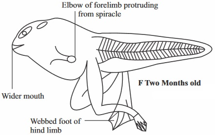
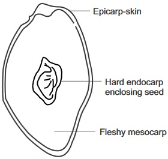

New Senior School Biology Practical Activity & Work Book 3
Chapter
6
DEVELOPMENT OF NEW ORGANISMS FRUITS AND SEEDS
Notable Concepts
Organism development (complete and incomplete metamorphosis)
Fertilization and development of zygote in animals and flowering plants
Germination.
Fruits and seeds.
Background Information
In sexual reproduction, development of a new individual of species begins with the zygote after fertilization has taken place. The zygote after undergoing certain processes which included cell division and cell differentiation grows into an embryo which eventually grows and develops into a new organism
In oviparous animals, the young ones are hatched from the eggs, in such organism, the new organism can undergo several other changes in stages before it can be like the adult in form and structure.
This is called metamorphosis. In some others, where the eggs hatch into a miniature (adult) an organism that looks like the adult. It is called incomplete metamorphosis, but if it hatches into a larva, it undergoes complete metamorphosis. In most mammals where viviparity occurs, the young ones develop into feotus in the womb before they are born, after birth they begin to develop into infant stage, adolescence stage and full grown adult.
Development of new Organisms in insect
1. The life cycle of a grasshopper, and butterfly.
The Insect
Mating and fertilization
Egg Laying
Metemorphosis
1. Grasshopper
A male grasshopper uses sound to attract a female. He rubs the thighs of his hind legs against his fore wings to produce the sound.
Apenis like structure introduces a sperm consisting sac into the female reproductive tract.The sperm reaches the sperm pouch inside the Abdomen of the female where they are stored. The eggs are fertilized by the sperm as they pass through the sperm pouch during the time they are being laid.
The female deposits the eggs in a hole. It produces a sticky substance which is to form a protective covering around the eggs. The whole structure in which the egg is contained is called egg pod.
Within about 2 to 3 days, in the presence of sufficient warmth and moisture,the eggs hatch out the nymphs. The nymphs are light brown with a measurement up to 6mm in length.They look like the parent although they are wingless. This is a case of incomplete metamorphosis.
2. Butterfly.
Here both visual and smell signals are used to attract each other for mating. The male hassexual attractants on their wings while the female release chemicals, posses colour pattern and flight behaviour. These are what it uses to attract the males
After a courtship flight, which lasts within a short time, the male hold the female abdomen with his claspers.Fertilization occurs internally like case of the grasshopper.
The egg is spherical and whitish. It is laid on the upper surface of young leaves of citrus plants. The eggs are laid one by one and glued with cement to the leaf surface.
The egg hatches into larva (caterpillar) which develops into a pupa and then from pupa to adult. This is a case of complete metamorphosis.
fig5.8: Life History of a Butterfly
Development of New Organism in Frogs or Toads
A - Egg
B Embryo
C One day after hatching
D Three weeks old
E One Month old
F Two Months old

G Three months old
H Adult frog
Development of young Ones in Humans.
After fertilization at the upper part of the oviduct, It takes around days 14 – 21 of the menstrual cycle for the zygote formed to be developed into an embryo and get implanted in the uterus. This stage is the pregnancy stage and as the embryo grows, the uterus becomes bigger to contain it. The embryonic membranes, amnion and chorion begin to form. Within 10 – 12 weeks, all major organs are formed in the embryo and from that time onwards the embryo becomes a foetus.
fig6.3a: Uterus during pregnancy
Placenta:
This is a disc shaped structure formed where the chorionic villi is embedded in the uterine endometrium tissue. It is linked to the foetus by the umbilical cord.
Arteries from the foetus move through the umbilical cord to the placenta, in the villi of the chorion, there are capillaries which branch from this artery. Materials pass from the blood into the capillaries in the villi. Umbilical veins carry the blood to the foetus.
The circulatory system of the feotus (embryo) is separate from that of the mother. The (foetus) embryo's blood stays within the capillaries of the chorionic villi as illustrated or shown in figure5.4. The blood stream of the foetus and that of the mother do not mix.
The placenta serves as a lung by removing oxygen from the mothers blood and passing carbon(iv)oxide to the mothers blood.
It also acts like the digestive system by bringing dissolved food nutrient from the mothers blood into the foetus (embryo).
It also carries out the work of the kidney by removing nitrogenous wastes from the foetus blood which eventually gets out through the mother excretory system.
fig6.3b:
BIRTH
During the last week of pregnancy, Oestrogen level in the women rises, Also oxytocin, a hormone secreted by the posterior pituitary gland together with the oestrogen rise, bring about the contraction of the uterus over and over. This is called labour. This labour contraction pushes the baby's head against the cervix, stretching and passing through the cervix, the baby eventually is pushed out of the mother through the vagina.
Fertilization and Zygote Development in Flowering plants
fig6.4a: A Stamen
fig6.4b: B Anther cut open
fig6.4c: C Anther cut open after bursting
fig6.4d: D Fertilization
fig6.4e:
After pollination, the male gametes will still need to move to the egg in the ovary which is still far from the stigma. To reach the egg cell, the pollen grain germinates to produce a pollen tube, which grows to reach the egg cell. Before germinating, the intine of the pollen grain grows out as a pollen tube through a pore or rupture at the exine.
Energy is required for this and it is obtained from stored food in the pollen grain. The pollen tube grows through the loosely packed cells of the style, into the ovary, it secretes enzymes which digest the cells inorder to provide it with necessary nutrients and energy for growth. When the pollen tube enters the embryo sac through the micropyle of the ovule, the tube nucleus disintegrates. The two male nucleus are now released into the embryo sac. Immediately one fuses with the egg cell to form a diploid (2n) zygote; the other migrates to the center of the embryo sac where it fuses with the two fused polar nucleus to form a triploid (3n) primary endosperm cell. This is called double fertilization and it is common but peculiar to flowering plants. Only one pollen tube enters an ovule. If the ovules are many or more than one, separate pollen tubes enter each separately.
After fertilization, the zygote develops into an embryo, the primary endosperm develops into endosperm tissue, the ovule becomes a seed while the ovary turns to a fruit.
Certain Types of Fruits
fig6.5: A Mango fruit (longitudinal section)

fig6.5: B Tomato fruit (longitude section)
fig6.5: C A fruit (grain) zea mays
fig6.5: D
fig6.5: E Undehisced Legume
Germination: Seeds can remain alive for long in a dry condition without germinating. They are said to be in dormancy period or resting period at such time. During favourable conditions, seeds can germinate into seedlings.
Germination of seeds refers to all changes that take place when the embryo in a seed starts its growth and development to become an independent seedling.
Conditions necessary for germination External conditions: Sufficient water; suitable temperature, and adequate oxygen supply.
Types of Germination
Types of Fruit
(i). True and False fruits.
Examples
fig6.6I True Fruit(Mango)
fig6.6II: False Fruit (Tomato)
Types of Fruit
(ii). Simple
Examples
fig6.6III Simple fruit (Maize grain)
Types of Fruit
(iii). Fresh and Dry fruits.
Examples
fig6.6IV: Fresh fruit (orange)
fig6.6V Dry fruit (Okro)
Types of Fruit
(iv). Dehiscent and undehiscentfruits.
Examples
fig6.6VI Dry fruit (Okro)
fig6.6VII Dry fruit (Okro)
Dispersal of fruits and seeds
Seed dispersal helps to reduce competition among members of the same species. It also produces favourable environmental conditions for the survival of the species.
Methods of seed dispersal
Dispersal by wind.
Dispersal by water.
Dispersal by explosive mechanism
Disperal by animals.
General Questions
1. After fertilization, a zygote is formed which develops into after a few days
2. A development that involves these steps
Egg → Larva → Pupa → Imago is a case of phase of development in an organisms called
3. The whole structure containing the egg in the geasshopper is called
4. The eggs of a cockroach hatches out into a which looks like the adult except that it is wingless.
For question 5 – 9 write down in the spaces provided what the larva of eachof the insects are called.
Insects
Larva
Mosquito
Butterfly/Moth
Housefly
Weevil/Beetle
Ant, bee, wasp
10. Development or metamorphosis of amphibians is controlled by the hormone
11. At what stage of development of a toad does the coiled intestine appear ?
12. Write two functions of the jelly covering in the egg of a toad
fig6.6a: A
fig6.6b: B
13. What stages of development of a frog is shown in the figure 5.8 a and b above ?
14. At what stage of development in a frog does it breath like a fish?
15. The caterpillar has
pairs of spiracles.
16. The structure called Osmeterium in caterpillar is for
feeling on leaves
breathing
defence when the caterpillar is disturbed
fig6.6c:
18. Label the major parts of the diagram of the pupal stage of a butterfly shown above
19. How many times does a female Tse-Tse fly need to mate in a life time
For questions 20 – 26, write into the space provided in the table, the type of metamorphosis carried out by each of the insects in the table.
Insects
Type of metamorphosis
20
Housefly
21
Mosquito
22
Cockroach
23
Aphids
24
Tsetsefly
25
Termites
26
Rice weevil
Diagram of the Amniotic egg of a chicken showing its development
fig6.6d:
fig6.6e:
Use the diagram to answer question 26 to 28
Label the: (26) air space; (27) The amniotic fluid; (28) The embryo.
29. In mammals, the baby receives nourishment from the mother through the
30. The two hormones that are involved in labour which results to birth are
and
31. After fertilization in flowering plants, the zygote develops into an embryo while the primary endosperm gives rise to endosperm tissue, the ovule becomes a
and the ovary itself turns to a
32. Write down three main functions of a seed
Expression Exercise
1a. What is moulting in an insect?
Periodic shedding of the outer covering(exoskeleton) of the insects as a periodic part of growth
The process of fortifying insects with calcium and magnesium
Mounting up of fresh wings to fly during rainy season.
b. What hormone is involved in the process of moulting?
c. State two similaries and two differences in the life cycle of a cockroach and that of a butterfly
Similarities:
Differrence:
2a. What is parthenocarpy?
b. Explain how an Aphid reproduces parthenogenetically:
c. Write one similarity in the life cycle of a housefly and that of a mosquito
3a. Write three functions of the placenta in the development of foetus in the uterus
b. How does a flowering plant carry out double fertilization?
4a. How does epigeal germination differ from hypogeal germination?
b. Write three examples of plants that carry out epigeal germination and three examples of plants that carries out hypogeal germination.
fig6.7a:
(a) Identify the type of dry fruit in the diagram above and label the parts indicated
(b) Write two differences between a legume and a capsule dry fruits.
Legume
Capsule
1
2
3
4
fig6.7b:
fig6.7c:
Label each of the diagrams in figure 6.7B and 6.7C
b. Write two example each, of the various types of fruits listed below
True fruits
False fruits
Simple fruits
Aggregate fruits
Composite fruits
Practical Activities
Finding and Examining toad eggs and Tadpoles
Materials/Apparatus Glass jars, hand lens
Method/ procedure
Pair up your selves and discuss where you are most likely to see toad eggs and tadpoles.
You can visit any nearby and suitable pond or stream close to the school compound.
Collect strings of toad eggs, feel them and gently place them with pond water in the glass jar after careful observation.
Also collect as many tadpoles as you can, but put pond weed in the jar containing the tadpoles.
Examine the stages of development of the tadpoles with the hand lens and see if you can observe various stages of development among the tadpoles.
Also use the hand lens to examine the eggs, note the colour and also the smell.
Questions
1(i) Write down where you found the strings of eggs?
(ii) What did you observe about the different sizes of the tadpoles and their stages of development
(iii) Why do you have to put pond weed into the glass jar containing the tadpoles
(iv) What is the colour and smell of the eggs (if you perceived any smell)
(v) What does your observation of the tadpoles in the pond or stream lead you to conclude about parental care among toads
2. Discovering the parts of a fruit
Material/Apparatus needed
Certain fruits such as mango, tomato, Coconut, Scalpel or knife
Method/procedure
Using the scalpel or knife, cut each of the fruits into two equal halves. Using the fruit stalk as the starting point.
Observe each section carefully and compare them with the drawings in figure 6.8A-C
Try to identify all laballed parts
Try to draw each section of the fruits you cut and label your diagram carefully using the diagram in fig 5.95 as a guide.
fig6.8 A: Coconut
fig6.8 B: Mango
fig6.8 C: Tomato
Questions
(i) What type of fruit can each of the fruits be categorized into. State the category in the space below.
Coconut
Mango
Tomato
(ii) Which parts of the flower is represented as shriveled remains on the tomato fruit.
(iii) State two ways by which tomato differes from the other fruits
Test of Practical Work
fig6.8: Okro
Cashew
Palm fruit
Guava
Classify each of the fruits displayed in the diagram according to the following
Dehiscent fruits
Dry Fruits
Fleshy fruits
State one method of seed dispersal for the plants whose fruits are shown in a, b, c, and d.
Development of the Foetus
(a) The diagram above is divided into A and B, state the right name for A and B
(b) What class or groups of vertebrates can they be found?
Can they be found in males or females?
(c) How does exchange of gases take place in the foetus?
(d) How is the foetus blood neatly separated from having direct contact from that of the mother though exchange of materials still take place?
SSCE Past Questions on Development of New Organisms Fruits and Seeds
Nov 1990q3
1. Study the diagrambelow and use it to answer question 1
(a) Name the parts labelled I - V
(b) In which of the labelled parts is food stored
June 1994Q7 a-b
3. Study the diagram below and use it to answer Question 3
(a) Name the parts labelled I - V
(b) What is the function of the part labelled I
May/June 2001 Q1
4. You are provided with Specimen A: Tadpole with internal gill and limb; specimen B: Mosquito pupa.
(a) Identify Specimen A and B without reasons
(b)i Examine the ventral part of specimen A and list four observable feature
(ii) Suggest the diet of specimen A, giving reasons
(iii) Identify one feature on the ventral part of specimen A which is not used by the organism at this stage. Give a reason for your answer.
(c) Describe two observable features in each specimens A and B which suggest their Habitats.
(d) Make a labelled drawing of 4cm – 10cm long of the lateral view of specimen A.
(Draw in your biology practical note book).
June 2003 Q 1
5. You are provided with specimen A in group H a bony fish (Tilapia) and specimen B in group I
a Tadpole
Name the adult stage of specimen B
List four external features common to specimen A and B
ii. In a tabular form, list four observable differences between specimens A and B
Specimens A
Specimens B
1
2
3
4
iii Make a labelled drawing of 8cm to 10cm long of specimen A to show its external features
(Draw in your practical biologgy note book)
iv. State, how four of its external features adapt the specimen A to its environment
V Name two classes of food that specimen A provides in human nutrition.
June 2000 Q1
6. Specimen A: Bean seed Specimen B: Fresh fruit of pride of Barbados/Bean pod
(a)i. Identify specimen A and B without reasons
ii. Give four differences between specimens A and B
specimens A
specimens B
Using sharp knife, scalpel or blade, cut specimen B into two equal halves to expose the internal structure;
(b)i. Make a labelled drawing of 8cm to 10cm to show the observable internal structures of specimen B.
(Draw in your Biology practical note book)
ii. State the dispersal mechanism of specimen B
June 1997 Q1b
7. Define Metamorphosis
JUNE 2000 WASSCE BIOLOGY PRACTICAL - QUESTION
You are provided with a bean seed as specimen A, a pride of barbados fruit (pod) as specimen B
1(a) (i) Identify specimens A and B without reasons[2marks]
(ii) Give four differences between specimens A and B [4marks].
Using a sharp knife, scarpel or blade, cut specimen B into two equal halves to expose the internal structures;
(b) (i) Make a labeled drawing of 8cm to 10cm long to show the observable internal structures of specimen B. [9marks]
(ii) State the dispersal mechanism of specimen B. [1mark]